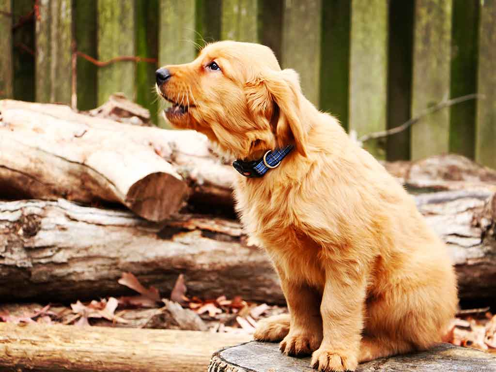

Happy Tails!
We are pleased to share with you stories of our sucessful rescues!
-
Bane
What a sweet little dog who is a great little guy to complete our family. We love him so very much and thank you loyal rescue so much again.
-
Bones
We adopted Bones in Decemeber 2010, and see has been a wonderful addition to our family. We love her tremendously. She is an energetic, playful, but very particular. We can not imagine life without her.
-

Jerry
We adopted Jerry in February 2014. We can’t imagine life without her. Our days are now filled with snuggles, tail wags, and lots of love. We are so thankful to Loyal and Jerry's foster family.